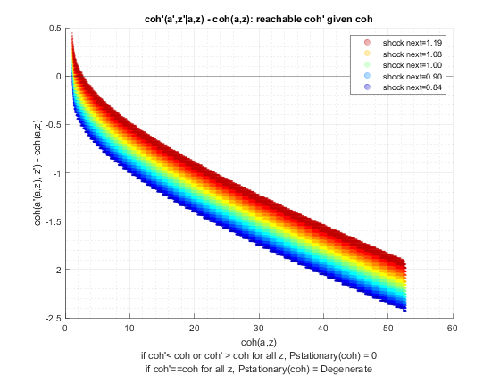
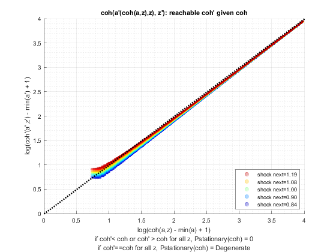
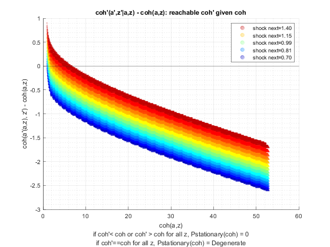
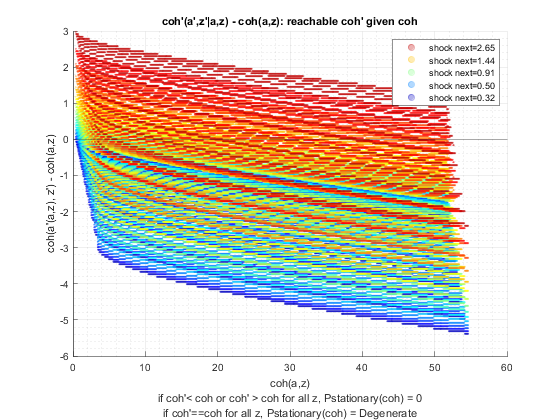

Test Shock Persistence and Variance (Savings Distribution)
back to Fan's Dynamic Assets Repository Table of Content.
Testing the ff_az_ds_vecsv program for solving the savings only dynamic programming problem.
defaults in ffs_az_set_default_param.m are:
- param_map('fl_z_rho') = 0.8;
- param_map('fl_z_sig') = 0.2;
here test three levels of persistence:
- iid shocks
- 0.50 persistence
- 0.99 persistence
for each shock, thest at these standard deviations of the log normal shock:
- 0.05
- 0.10
- 0.30
@seealso
- SPEED savings only overall benchmark speed testing: fsi_az_ds_vecsv_speed
- PREFERENCE savings only preference testing: fsi_az_ds_vecsv_pref
- PREFERENCE savings only preference testing cross: fsi_az_ds_vecsv_pref_cross
- SHOCK savings only shock testing: fsi_az_ds_vecsv_shock
- SHOCK savings only shock testing cross: fsi_az_ds_vecsv_shock_cross
- PRICE savings only wage and interest rate testing cross: adjust wage and savings rate fsi_az_ds_vecsv_price_cross
Contents
Set Shared Parameters
close all; clear all; ar_fl_z_rho = [0.0, 0.50, 0.99]; ar_fl_z_sig = [0.05, 0.10, 0.3]; it_a_n = 750; it_z_n = 15;
Simulate Model with schok persistence = 0.0, IID
for fl_z_sig = ar_fl_z_sig disp('xxxxxxxxxxxxxxxxxxxxxxxxxxx'); disp('xxxxxxxxxxxxxxxxxxxxxxxxxxx'); disp(['fl_z_rho = ' num2str(ar_fl_z_rho(1))]); disp(['fl_z_sig = ' num2str(fl_z_sig)]); disp('xxxxxxxxxxxxxxxxxxxxxxxxxxx'); disp('xxxxxxxxxxxxxxxxxxxxxxxxxxx'); disp(''); disp(''); disp(''); disp(''); % Call Default Parameters <https://fanwangecon.github.io/CodeDynaAsset/m_az/paramfunc/html/ffs_az_set_default_param.html ffs_az_set_default_param> bl_input_override = true; it_param_set = 9; [param_map, support_map] = ffs_az_set_default_param(it_param_set); % Simulation Accuracy param_map('it_a_n') = it_a_n; param_map('it_z_n') = it_z_n; param_map('fl_z_rho') = ar_fl_z_rho(1); param_map('fl_z_sig') = fl_z_sig; % Display Parameters support_map('bl_display') = false; support_map('bl_display_final') = false; support_map('bl_time') = true; support_map('bl_profile') = false; support_map('bl_graph_coh_t_coh') = true; % Call Grid Generator <https://fanwangecon.github.io/CodeDynaAsset/m_az/paramfunc/html/ffs_az_get_funcgrid.html ffs_az_get_funcgrid> [armt_map, func_map] = ffs_az_get_funcgrid(param_map, support_map, bl_input_override); % Call Dynamic Programming Problem <https://fanwangecon.github.io/CodeDynaAsset/m_az/solve/html/ff_az_vf_vecsv.html ff_az_vf_vecsv> result_map = ff_az_vf_vecsv(param_map, support_map, armt_map, func_map); % Call Distribution CProgram result_map = ff_az_ds_vecsv(param_map, support_map, armt_map, func_map, result_map, bl_input_override); % Snap snapnow; end % close all close all;
xxxxxxxxxxxxxxxxxxxxxxxxxxx
xxxxxxxxxxxxxxxxxxxxxxxxxxx
fl_z_rho = 0
fl_z_sig = 0.05
xxxxxxxxxxxxxxxxxxxxxxxxxxx
xxxxxxxxxxxxxxxxxxxxxxxxxxx
Elapsed time is 1.810328 seconds.
Warning: The shifted operator is close to singular or badly scaled. RCOND =
7.604831e-17. Consider using a different value for sigma.
Elapsed time is 0.278473 seconds.
xxx All Variables PERCENTILES AND STATS xxx
tb_outcomes_meansdperc: mean, sd, percentiles
mean sd coefofvar min max pYis0 pYls0 pYgr0 pYisMINY pYisMAXY p0_1 p1 p5 p10 p15 p20 p25 p35 p50 p65 p75 p80 p85 p90 p95 p99 p99_9
________ ________ _________ ______ ______ _______ _____ _______ _________ __________ ______ ______ ______ ______ ______ ______ ______ ______ ______ ______ ______ ________ ________ ________ ________ ________ _______
cl_mt_pol_a 0.014137 0.028953 2.0481 0 48.064 0.79852 0 0.20148 0.79852 1.4635e-35 0 0 0 0 0 0 0 0 0 0 0 0.066756 0.066756 0.066756 0.066756 0.066756 0.13351
cl_mt_coh 1.2945 0.070889 0.054762 1.1003 52.735 0 0 1 0.0021324 1.4377e-35 1.1003 1.1485 1.1734 1.1988 1.2248 1.2248 1.2513 1.2672 1.2932 1.3197 1.3344 1.3633 1.3633 1.3928 1.423 1.4612 1.5296
cl_mt_pol_c 1.2804 0.053073 0.041452 1.1003 4.6923 0 0 1 0.0021324 1.0351e-35 1.1003 1.1485 1.1734 1.1988 1.2248 1.2248 1.2513 1.2672 1.2932 1.3061 1.3197 1.3344 1.3344 1.336 1.3518 1.387 1.3945


xxxxxxxxxxxxxxxxxxxxxxxxxxx
xxxxxxxxxxxxxxxxxxxxxxxxxxx
fl_z_rho = 0
fl_z_sig = 0.1
xxxxxxxxxxxxxxxxxxxxxxxxxxx
xxxxxxxxxxxxxxxxxxxxxxxxxxx
Elapsed time is 2.832132 seconds.
Warning: The shifted operator is close
to singular or badly scaled. RCOND =
2.686277e-17. Consider using a different
value for sigma.
Elapsed time is 0.205387 seconds.
xxx All Variables PERCENTILES AND STATS xxx
tb_outcomes_meansdperc: mean, sd, percentiles
mean sd coefofvar min max pYis0 pYls0 pYgr0 pYisMINY pYisMAXY p0_1 p1 p5 p10 p15 p20 p25 p35 p50 p65 p75 p80 p85 p90 p95 p99 p99_9
________ ________ _________ _______ ______ _______ _____ _______ _________ __________ _______ ______ ______ ______ ______ ______ ______ ______ ________ ________ _______ _______ _______ _______ _______ _______ _______
cl_mt_pol_a 0.071441 0.083204 1.1647 0 48.264 0.42104 0 0.57896 0.42104 1.1609e-35 0 0 0 0 0 0 0 0 0.066756 0.066756 0.13351 0.13351 0.13351 0.20027 0.26702 0.33378 0.46729
cl_mt_coh 1.3532 0.15462 0.11426 0.94347 52.969 0 0 1 0.0011244 1.1609e-35 0.94347 1.0279 1.1199 1.1689 1.1883 1.2201 1.2374 1.2782 1.342 1.3977 1.4559 1.4662 1.5167 1.5622 1.6463 1.7832 1.9207
cl_mt_pol_c 1.2818 0.083202 0.064911 0.94347 4.7048 0 0 1 0.0011244 1.1609e-35 0.94347 1.0279 1.1199 1.1689 1.1883 1.2201 1.2374 1.2735 1.2885 1.3208 1.3327 1.3436 1.3782 1.3832 1.3909 1.42 1.4566

xxxxxxxxxxxxxxxxxxxxxxxxxxx
xxxxxxxxxxxxxxxxxxxxxxxxxxx
fl_z_rho = 0
fl_z_sig = 0.3
xxxxxxxxxxxxxxxxxxxxxxxxxxx
xxxxxxxxxxxxxxxxxxxxxxxxxxx
Elapsed time is 2.186693 seconds.
Elapsed time is 0.329189 seconds.
xxx All Variables PERCENTILES AND STATS xxx
tb_outcomes_meansdperc: mean, sd, percentiles
mean sd coefofvar min max pYis0 pYls0 pYgr0 pYisMINY pYisMAXY p0_1 p1 p5 p10 p15 p20 p25 p35 p50 p65 p75 p80 p85 p90 p95 p99 p99_9
______ _______ _________ _______ ______ _______ _____ _______ __________ __________ _______ _______ _______ ______ ________ _______ _______ _______ _______ ______ _______ _______ ______ ______ ______ ______ ______
cl_mt_pol_a 0.523 0.46324 0.88575 0 49.533 0.12428 0 0.87572 0.12428 6.8778e-35 0 0 0 0 0.066756 0.13351 0.13351 0.26702 0.40053 0.6008 0.80107 0.86782 1.0013 1.2016 1.4019 2.0027 2.6702
cl_mt_coh 1.8161 0.61708 0.33979 0.49728 54.258 0 0 1 0.00033188 6.8778e-35 0.56551 0.73134 0.94579 1.0826 1.2124 1.2879 1.36 1.5159 1.7331 1.9758 2.1811 2.3072 2.4548 2.6564 2.962 3.6034 4.3872
cl_mt_pol_c 1.2931 0.17147 0.13261 0.49728 4.7257 0 0 1 0.00033188 6.8778e-35 0.56551 0.73134 0.94579 1.0826 1.1456 1.1564 1.2157 1.248 1.3164 1.3733 1.4066 1.4377 1.4584 1.4844 1.5383 1.6217 1.7083


Simulate Model with schok persistence = 0.5
close all for fl_z_sig = ar_fl_z_sig disp('xxxxxxxxxxxxxxxxxxxxxxxxxxx'); disp('xxxxxxxxxxxxxxxxxxxxxxxxxxx'); disp(['fl_z_rho = ' num2str(ar_fl_z_rho(2))]); disp(['fl_z_sig = ' num2str(fl_z_sig)]); disp('xxxxxxxxxxxxxxxxxxxxxxxxxxx'); disp('xxxxxxxxxxxxxxxxxxxxxxxxxxx'); disp(''); disp(''); disp(''); disp(''); % Call Default Parameters <https://fanwangecon.github.io/CodeDynaAsset/m_az/paramfunc/html/ffs_az_set_default_param.html ffs_az_set_default_param> bl_input_override = true; it_param_set = 9; [param_map, support_map] = ffs_az_set_default_param(it_param_set); % Simulation Accuracy param_map('it_a_n') = it_a_n; param_map('it_z_n') = it_z_n; param_map('fl_z_rho') = ar_fl_z_rho(2); param_map('fl_z_sig') = fl_z_sig; % Display Parameters support_map('bl_display') = false; support_map('bl_display_final') = false; support_map('bl_time') = true; support_map('bl_profile') = false; support_map('bl_graph_coh_t_coh') = true; % Call Grid Generator <https://fanwangecon.github.io/CodeDynaAsset/m_az/paramfunc/html/ffs_az_get_funcgrid.html ffs_az_get_funcgrid> [armt_map, func_map] = ffs_az_get_funcgrid(param_map, support_map, bl_input_override); % Call Dynamic Programming Problem <https://fanwangecon.github.io/CodeDynaAsset/m_az/solve/html/ff_az_vf_vecsv.html ff_az_vf_vecsv> result_map = ff_az_vf_vecsv(param_map, support_map, armt_map, func_map); % Call Distribution CProgram result_map = ff_az_ds_vecsv(param_map, support_map, armt_map, func_map, result_map, bl_input_override); % Snap snapnow; end % close all close all;
xxxxxxxxxxxxxxxxxxxxxxxxxxx
xxxxxxxxxxxxxxxxxxxxxxxxxxx
fl_z_rho = 0.5
fl_z_sig = 0.05
xxxxxxxxxxxxxxxxxxxxxxxxxxx
xxxxxxxxxxxxxxxxxxxxxxxxxxx
Elapsed time is 1.759903 seconds.
Elapsed time is 0.111089 seconds.
xxx All Variables PERCENTILES AND STATS xxx
tb_outcomes_meansdperc: mean, sd, percentiles
mean sd coefofvar min max pYis0 pYls0 pYgr0 pYisMINY pYisMAXY p0_1 p1 p5 p10 p15 p20 p25 p35 p50 p65 p75 p80 p85 p90 p95 p99 p99_9
_________ ________ _________ ______ ______ _______ _____ _______ ________ ___________ ______ ______ ______ ______ ______ ______ ______ ______ ______ ______ ______ ______ ______ ______ ________ ________ _______
cl_mt_pol_a 0.0040527 0.017834 4.4005 0 48.064 0.94567 0 0.05433 0.94567 -5.1228e-35 0 0 0 0 0 0 0 0 0 0 0 0 0 0 0.066756 0.066756 0.13351
cl_mt_coh 1.2842 0.080257 0.062498 1.0746 52.769 0 0 1 0.002686 -3.0562e-35 1.0746 1.1291 1.1574 1.1864 1.2161 1.2161 1.2161 1.2466 1.2778 1.3099 1.3427 1.3427 1.3763 1.3763 1.4111 1.5132 1.5879
cl_mt_pol_c 1.2801 0.072101 0.056324 1.0746 4.7054 0 0 1 0.002686 -3.0562e-35 1.0746 1.1291 1.1574 1.1864 1.2161 1.2161 1.2161 1.2466 1.2778 1.3099 1.3427 1.3427 1.3763 1.3763 1.4108 1.4156 1.4544
  xxxxxxxxxxxxxxxxxxxxxxxxxxx
xxxxxxxxxxxxxxxxxxxxxxxxxxx
fl_z_rho = 0.5
fl_z_sig = 0.1
xxxxxxxxxxxxxxxxxxxxxxxxxxx
xxxxxxxxxxxxxxxxxxxxxxxxxxx
Elapsed time is 2.670310 seconds.
Warning: The shifted operator is close
to singular or badly scaled. RCOND =
2.562586e-18. Consider using a different
value for sigma.
Elapsed time is 0.344870 seconds.
xxx All Variables PERCENTILES AND STATS xxx
tb_outcomes_meansdperc: mean, sd, percentiles
mean sd coefofvar min max pYis0 pYls0 pYgr0 pYisMINY pYisMAXY p0_1 p1 p5 p10 p15 p20 p25 p35 p50 p65 p75 p80 p85 p90 p95 p99 p99_9
________ _______ _________ _______ ______ _______ _____ _______ _________ ___________ _______ _______ ______ _____ ______ ______ ____ ______ ______ ________ ________ _______ _______ _______ _______ _______ _______
cl_mt_pol_a 0.072602 0.11439 1.5755 0 48.331 0.52906 0 0.47094 0.52906 -2.7911e-37 0 0 0 0 0 0 0 0 0 0.066756 0.066756 0.13351 0.20027 0.20027 0.33378 0.53405 0.73431
cl_mt_coh 1.3544 0.21733 0.16046 0.89914 53.048 0 0 1 0.0024529 -2.7911e-37 0.89914 0.99269 1.0431 1.096 1.1516 1.1644 1.21 1.2714 1.3359 1.4043 1.4727 1.5405 1.5497 1.6283 1.755 2.0201 2.3125
cl_mt_pol_c 1.2818 0.12208 0.095242 0.89914 4.7166 0 0 1 0.0024529 -2.7911e-37 0.89914 0.99269 1.0431 1.096 1.1516 1.1644 1.21 1.2714 1.2784 1.3375 1.4053 1.4076 1.4098 1.4131 1.4297 1.5065 1.5697
 
xxxxxxxxxxxxxxxxxxxxxxxxxxx
xxxxxxxxxxxxxxxxxxxxxxxxxxx
fl_z_rho = 0.5
fl_z_sig = 0.3
xxxxxxxxxxxxxxxxxxxxxxxxxxx
xxxxxxxxxxxxxxxxxxxxxxxxxxx
Elapsed time is 2.997732 seconds.
Elapsed time is 0.669025 seconds.
xxx All Variables PERCENTILES AND STATS xxx
tb_outcomes_meansdperc: mean, sd, percentiles
mean sd coefofvar min max pYis0 pYls0 pYgr0 pYisMINY pYisMAXY p0_1 p1 p5 p10 p15 p20 p25 p35 p50 p65 p75 p80 p85 p90 p95 p99 p99_9
_______ _______ _________ _______ ______ _______ _____ _______ _________ __________ _______ ______ _______ _______ ________ _______ _______ _______ _______ ______ ______ ______ ______ ______ ______ ______ ______
cl_mt_pol_a 0.92661 0.95046 1.0257 0 49.866 0.11184 0 0.88816 0.11184 2.2935e-35 0 0 0 0 0.066756 0.13351 0.20027 0.40053 0.66756 1.0013 1.3351 1.6021 1.8692 2.2029 2.8705 4.1389 5.8745
cl_mt_coh 2.2298 1.1815 0.52986 0.42606 54.655 0 0 1 0.0010815 2.2935e-35 0.42606 0.6311 0.83999 0.9839 1.1067 1.2436 1.374 1.6025 1.9572 2.4277 2.8342 3.0846 3.3941 3.8234 4.5448 6.02 7.9289
cl_mt_pol_c 1.3032 0.26073 0.20007 0.42606 4.7886 0 0 1 0.0010815 2.2935e-35 0.42606 0.6311 0.83999 0.96348 1.0383 1.1084 1.1394 1.2128 1.334 1.4206 1.4931 1.5182 1.5782 1.6092 1.6943 1.8658 2.0417


Simulate Model with schok persistence = 0.99 (very persistent)
close all for fl_z_sig = ar_fl_z_sig disp('xxxxxxxxxxxxxxxxxxxxxxxxxxx'); disp('xxxxxxxxxxxxxxxxxxxxxxxxxxx'); disp(['fl_z_rho = ' num2str(ar_fl_z_rho(3))]); disp(['fl_z_sig = ' num2str(fl_z_sig)]); disp('xxxxxxxxxxxxxxxxxxxxxxxxxxx'); disp('xxxxxxxxxxxxxxxxxxxxxxxxxxx'); disp(''); disp(''); disp(''); disp(''); % Call Default Parameters <https://fanwangecon.github.io/CodeDynaAsset/m_az/paramfunc/html/ffs_az_set_default_param.html ffs_az_set_default_param> bl_input_override = true; it_param_set = 9; [param_map, support_map] = ffs_az_set_default_param(it_param_set); % Simulation Accuracy param_map('it_a_n') = it_a_n; param_map('it_z_n') = it_z_n; param_map('fl_z_rho') = ar_fl_z_rho(3); param_map('fl_z_sig') = fl_z_sig; % Display Parameters support_map('bl_display') = false; support_map('bl_display_final') = false; support_map('bl_time') = true; support_map('bl_profile') = false; support_map('bl_graph_coh_t_coh') = true; % Call Grid Generator <https://fanwangecon.github.io/CodeDynaAsset/m_az/paramfunc/html/ffs_az_get_funcgrid.html ffs_az_get_funcgrid> [armt_map, func_map] = ffs_az_get_funcgrid(param_map, support_map, bl_input_override); % Call Dynamic Programming Problem <https://fanwangecon.github.io/CodeDynaAsset/m_az/solve/html/ff_az_vf_vecsv.html ff_az_vf_vecsv> result_map = ff_az_vf_vecsv(param_map, support_map, armt_map, func_map); % Call Distribution CProgram result_map = ff_az_ds_vecsv(param_map, support_map, armt_map, func_map, result_map, bl_input_override); % Snap snapnow; end % close all close all; clear all;
xxxxxxxxxxxxxxxxxxxxxxxxxxx
xxxxxxxxxxxxxxxxxxxxxxxxxxx
fl_z_rho = 0.99
fl_z_sig = 0.05
xxxxxxxxxxxxxxxxxxxxxxxxxxx
xxxxxxxxxxxxxxxxxxxxxxxxxxx
Elapsed time is 1.714459 seconds.
Warning: The shifted operator is close
to singular or badly scaled. RCOND =
9.874869e-17. Consider using a different
value for sigma.
Elapsed time is 0.115438 seconds.
xxx All Variables PERCENTILES AND STATS xxx
tb_outcomes_meansdperc: mean, sd, percentiles
mean sd coefofvar min max pYis0 pYls0 pYgr0 pYisMINY pYisMAXY p0_1 p1 p5 p10 p15 p20 p25 p35 p50 p65 p75 p80 p85 p90 p95 p99 p99_9
__________ ___________________ ___________________ _______ ______ _____ _____ ________ _________ ___________ _______ _______ _______ _______ _______ _______ _______ ______ ____ _____ ______ ______ ______ ______ ______ ______ ______
cl_mt_pol_a 1.7311e-32 0+4.5431e-16i 0+2.6244e+16i 0 48.264 1 0 6.91e-33 1 9.4965e-37 0 0 0 0 0 0 0 0 0 0 0 0 0 0 0 0 0
cl_mt_coh 1.2803 0.55946+0i 0.43697+0i 0.40402 54.638 0 0 1 0.0076808 -4.7938e-36 0.40402 0.47029 0.54744 0.63725 0.74179 0.86348 0.86348 1.0051 1.17 1.362 1.5854 1.5854 1.8455 2.1482 2.5006 2.9108 3.3883
cl_mt_pol_c 1.2803 0.55946+0i 0.43697+0i 0.40402 6.9748 0 0 1 0.0076808 -4.7938e-36 0.40402 0.47029 0.54744 0.63725 0.74179 0.86348 0.86348 1.0051 1.17 1.362 1.5854 1.5854 1.8455 2.1482 2.5006 2.9108 3.3883
 
xxxxxxxxxxxxxxxxxxxxxxxxxxx
xxxxxxxxxxxxxxxxxxxxxxxxxxx
fl_z_rho = 0.99
fl_z_sig = 0.1
xxxxxxxxxxxxxxxxxxxxxxxxxxx
xxxxxxxxxxxxxxxxxxxxxxxxxxx
Elapsed time is 2.189916 seconds.
Elapsed time is 0.154536 seconds.
xxx All Variables PERCENTILES AND STATS xxx
tb_outcomes_meansdperc: mean, sd, percentiles
mean sd coefofvar min max pYis0 pYls0 pYgr0 pYisMINY pYisMAXY p0_1 p1 p5 p10 p15 p20 p25 p35 p50 p65 p75 p80 p85 p90 p95 p99 p99_9
________ _______ _________ _______ ______ _______ _____ ________ _________ __________ _______ _______ _______ _______ _______ ______ ______ _______ _____ ______ ______ ______ ______ ______ ______ ______ ______
cl_mt_pol_a 0.029222 0.28726 9.8303 0 48.531 0.98247 0 0.017526 0.98247 4.1746e-37 0 0 0 0 0 0 0 0 0 0 0 0 0 0 0 1.0681 4.3391
cl_mt_coh 1.3106 1.357 1.0355 0.10708 58.781 0 0 1 0.0076808 -3.78e-36 0.10708 0.14509 0.19659 0.26639 0.36096 0.4891 0.4891 0.66273 0.898 1.2168 1.6488 1.6488 2.2341 3.0272 4.1019 7.2003 11.842
cl_mt_pol_c 1.2814 1.2002 0.93669 0.10708 10.317 0 0 1 0.0076808 -3.78e-36 0.10708 0.14509 0.19659 0.26639 0.36096 0.4891 0.4891 0.66273 0.898 1.2168 1.6488 1.6488 2.2341 3.0272 4.1019 5.7283 7.5696


xxxxxxxxxxxxxxxxxxxxxxxxxxx
xxxxxxxxxxxxxxxxxxxxxxxxxxx
fl_z_rho = 0.99
fl_z_sig = 0.3
xxxxxxxxxxxxxxxxxxxxxxxxxxx
xxxxxxxxxxxxxxxxxxxxxxxxxxx
Elapsed time is 4.440344 seconds.
Elapsed time is 1.332585 seconds.
xxx All Variables PERCENTILES AND STATS xxx
tb_outcomes_meansdperc: mean, sd, percentiles
mean sd coefofvar min max pYis0 pYls0 pYgr0 pYisMINY pYisMAXY p0_1 p1 p5 p10 p15 p20 p25 p35 p50 p65 p75 p80 p85 p90 p95 p99 p99_9
______ ______ _________ __________ ______ ___________ _____ _____ ___________ _________ ________ ________ ________ ________ ________ ________ ________ ________ _______ _______ _______ ______ ______ ______ ______ ______ ______
cl_mt_pol_a 6.5359 12.238 1.8724 0 50 -2.8202e-33 0 1 -2.8202e-33 0.033532 0.53405 0.53405 0.53405 0.53405 0.53405 0.53405 0.53405 0.53405 0.86782 2.6035 5.2069 7.8772 12.75 22.029 41.989 50 50
cl_mt_coh 7.9807 16.213 2.0315 0.00013575 98.487 0 0 1 -3.052e-34 0.0074934 0.54753 0.54773 0.54949 0.5526 0.56033 0.56033 0.57958 0.62747 1.038 2.9539 5.9696 8.9803 14.5 25.032 47.762 70.237 98.487
cl_mt_pol_c 1.4448 5.022 3.476 0.00013575 48.487 0 0 1 -3.052e-34 0.0074934 0.013487 0.013689 0.015441 0.018552 0.018552 0.026289 0.026289 0.045539 0.16069 0.37881 0.69089 1.1315 1.6586 2.9103 6.3085 20.237 48.487